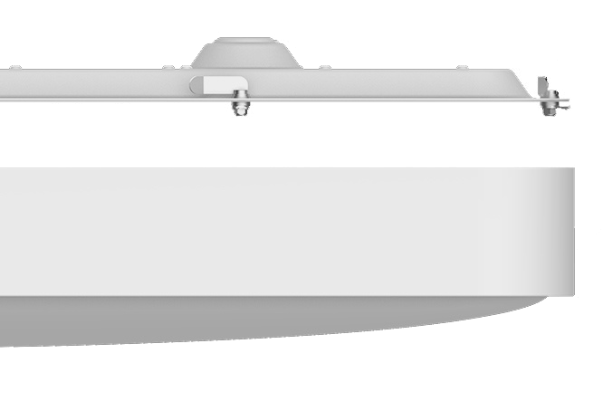

<div class="row nox">
    <div class="col-xs-12 col-sm-12 col-md-10 col-md-offset-1 col-lg-8 col-lg-offset-2 content">

        <section class="row nox_content_1">
            <div class="col-xs-12 col-sm-12 col-md-8 col-lg-8">
                <div class="text">
                    <h1>Yeelight Crystal Ceiling Light Pro</h1>
                    <h2>Элегантное освещение для вашей гостиной</h2>
                    <p>960mm x 640mm | Регулируемая яркость и цветовая температура | Антимоскитный дизайн | Умное
                        управление</p>
                </div>
            </div>
        </section>

        <section class="row nox_content_2">
            <div class="col-xs-12 col-sm-6 col-md-6 col-lg-6" style="padding: 0; font-size: 0;"></div>
            <div class="col-xs-12 col-sm-6 col-md-6 col-lg-6" style="padding: 0">
                <div class="text">
                    <h2>Лучшее освещение — лучшая жизнь</h2>
                    <p>Большая гостиная должна быть хорошо освещена. Благодаря большому дисплею на поверхности Crystal
                        Pro дает вам полный контроль над настройкой. Будь то через Wi-Fi, Bluetooth, Amazon Alexa или
                        Google Assistant, вы сможете настроить яркость и цветовую температуру по своему желанию.</p>
                </div>
            </div>
        </section>

        <section class="row nox_content_3">
            <div class="col-xs-12 col-sm-12 col-md-12 col-lg-8">
                <div class="text">
                    <h2>Большой энергоэффективный дисплей</h2>
                    <p>Crystal Pro имеет большой дисплей и был спроектирован таким образом, чтобы обеспечить
                        оптимальное освещение при высокой энергоэффективности.</p>
                </div>
            </div>
        </section>

        <section class="row nox_content_4">
            <div class="col-xs-12 col-sm-12 col-md-12 col-lg-12 align-center">
                <div class="text">
                    <h2>Регулируемая яркость и цветовая температура</h2>
                    <p>Crystal Pro позволяет точно регулировать яркость вашей гостиной, чтобы обеспечить удобство для
                        различных случаев, таких как высокая яркость для работы и низкая яркость для расслабления.
                        Crystal Pro настраивает цветовую температуру под ваше настроение и времена года, обеспечивая
                        вам прохладное белое освещение летом и теплое желтое освещение зимой.</p>
                </div>
                <ul class="function">
                    <li>
                        <span class="icon inclamp"></span>
                        <p>2800K <br>Лампа накаливания</p>
                    </li>
                    <li>
                        <span class="icon sunriselight"></span>
                        <p>3400K <br>Солнце на восходе</p>
                    </li>
                    <li>
                        <span class="icon sunlight"></span>
                        <p>5500K <br>Дневной свет</p>
                    </li>
                    <li>
                        <span class="icon fluorlight"></span>
                        <p>6500K <br>Люминисцентный свет</p>
                    </li>
                </ul>
                
            </div>
        </section>

        <section class="row nox_content_5">
            <div class="col-xs-12 col-sm-12 col-md-10 col-md-offset-1 col-lg-10 col-lg-offset-1 align-center">
                <div class="text">
                    <h2>Различные режимы для разных случаев</h2>
                    <p>Crystal Pro имеет различные режимы на выбор, каждый из которых имеет уникальную настройку,
                        соответствующую вашему случаю. Доступ к режимам можно получить с помощью приложений Mi Home или
                        Yeelight.</p>
                </div>
            </div>
        </section>

        <section class="row nox_content_6 row-flex">
            <div class="col-xs-12 col-sm-4 col-md-4 col-lg-4 item_1 align-center">
                <div class="text">
                    <h2>Лунный режим</h2>
                    <p>Холодное и тусклое освещение, идеально подходит для просмотра фильмов.</p>
                </div>
            </div>
            <div class="col-xs-12 col-sm-4 col-md-4 col-lg-4 item_2 align-center">
                <div class="text">
                    <h2>Режим свечей</h2>
                    <p>Теплый и тусклый свет, идеально подходящий для романтического вечера.</p>
                </div>
            </div>
            <div class="col-xs-12 col-sm-4 col-md-4 col-lg-4 item_3 align-center">
                <div class="text">
                    <h2>Режим чтения</h2>
                    <p>Четкое яркое освещение, удобное для чтения.</p>
                </div>
            </div>
        </section>

        <section class="row nox_content_7">
            <div class="col-xs-12 col-sm-12 col-md-10 col-md-offset-1 col-lg-8 col-lg-offset-2 align-center">
                <div class="text">
                    <h2>Индекс высокой цветопередачи</h2>
                    <p>Высокая цветопередача является ключом к светлой гостиной. С индексом цветопередачи Ra95 Crystal
                        Pro вы сможете подобрать наиболее подходящее освещение для вашей гостиной. Замените вялое желтое
                        освещение яркими цветами.</p>
                </div>
            </div>
        </section>

        <section class="row nox_content_12">
            <div class="col-xs-12 col-sm-6 col-md-6 col-lg-6" style="padding: 0; font-size: 0;"></div>
            <div class="col-xs-12 col-sm-6 col-md-6 col-lg-6" style="padding: 0">
                <div class="text">
                    <h2>Универсальный стиль</h2>
                    <p>Гладкий геометрический дизайн Crystal Pro делает его очень универсальным достоянием вашей
                        гостиной, поскольку он совместим с различными современными стилями.</p>
                </div>
            </div>
        </section>

        <section class="row nox_content_8">
            <div class="col-xs-12 col-sm-6 col-md-6 col-lg-6" style="padding: 0">
                <div class="text">
                    <h2>Несколько интеллектуальных элементов управления</h2>
                    <p>Crystal Pro поддерживает несколько вариантов интеллектуального управления. Помимо традиционного
                        настенного переключателя и пульта Bluetooth, с мобильными приложениями Yeelight или Mi Home вы
                        можете легко настроить освещение в своей комнате. Синхронизируя ваш свет с помощью Google
                        Assistant или Amazon Alexa, вы можете реализовать голосовое управление яркостью и цветовой
                        температурой.</p>
                    <ul class="function">
                        <li>
                            <span class="icon appcontrol"></span>
                            <p>Приложение</p>
                        </li>
                        <li>
                            <span class="icon swichcontrol"></span>
                            <p>Выключатель</p>
                        </li>
                        <li>
                            <span class="icon remotecontrol"></span>
                            <p>Пульт</p>
                        </li>
                    </ul>
                </div>

            </div>
            <div class="col-xs-12 col-sm-6 col-md-6 col-lg-6" style="padding: 0; font-size: 0;"></div>
        </section>

        <section class="row nox_content_9">
            <div class="col-xs-12 col-sm-6 col-md-6 col-lg-6" style="padding: 0; font-size: 0;"></div>
            <div class="col-xs-12 col-sm-6 col-md-6 col-lg-6" style="padding: 0">
                <div class="text">
                    <h2>Сделано с качеством</h2>
                    <p>Crystal Pro выполнен из рамы алюминиевого сплава, обеспечивая прочность и легкость. Щит 0,8 мм
                        тонкий, но плотный, сохраняет свою форму с течением времени. Дисплей поверхности тонко
                        распределяется, чтобы гарантировать равномерное освещение.</p>
                </div>
            </div>
        </section>

        <section class="row nox_content_10">
            <div class="col-xs-12 col-sm-6 col-md-6 col-lg-6" style="padding: 0">
                <div class="text">
                    <h2>Защита от пыли и насекомых</h2>
                    <p>Винтовая секция Crystal Pro плотно затянута, что предотвращает попадание пыли и насекомых в
                        лампу после ее установки. Защита от насекомых. Во избежание проникновения насекомых и пыли,
                        соединительный механизм расположен рядом с входным отверстием для подключения к электросети.
                    </p>
                </div>
            </div>
            <div class="col-xs-12 col-sm-6 col-md-6 col-lg-6" style="padding: 0; font-size: 0;"></div>
        </section>

        <section class="row nox_content_11">
            <div class="col-sm-12 col-md-12 col-lg-12">
                <table class="table">
                    <thead>
                        <tr>
                            <th colspan="2">Характеристики</th>
                        </tr>
                    </thead>
                    <tbody>
                        <tr>
                            <td>Модель</td>
                            <td>YLXD08YL</td>
                        </tr>
                        <tr>
                            <td>Цвет</td>
                            <td>Белый</td>
                        </tr>
                        <tr>
                            <td>Размеры</td>
                            <td>960x640x113mm</td>
                        </tr>
                        <tr>
                            <td>Световой поток</td>
                            <td>Регулируемый: 700lm-6000lm</td>
                        </tr>
                        <tr>
                            <td>Сеть</td>
                            <td>Wi-Fi IEEE 802.11 b/g/n 2.4GHz</td>
                        </tr>
                        <tr>
                            <td>Цветовая температура</td>
                            <td>Регулируемая: 2700K-6500K</td>
                        </tr>
                        <tr>
                            <td>CRI</td>
                            <td>>95</td>
                        </tr>
                        <tr>
                            <td>Мощность</td>
                            <td>90W</td>
                        </tr>
                        <tr>
                            <td>Поддерживаемые платформы</td>
                            <td>Android 4.4 и выше / IOS 8.0 и выше</td>
                        </tr>
                    </tbody>
                </table>
            </div>
        </section>
    </div>
</div>